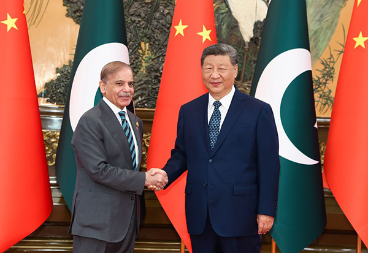
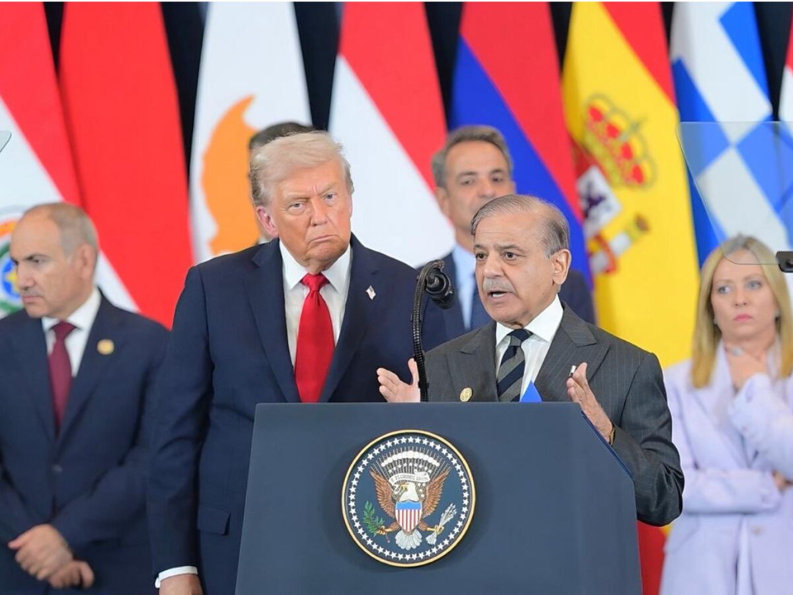
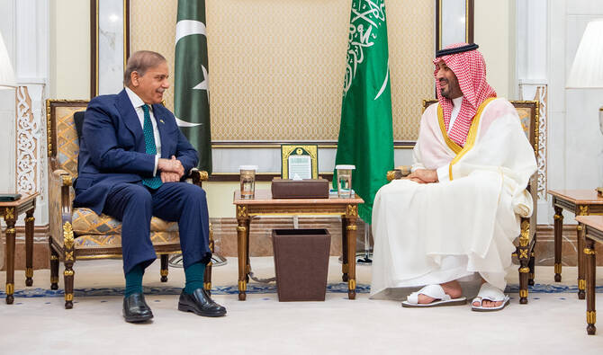
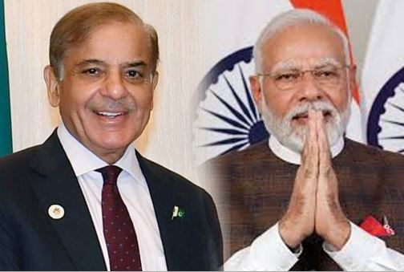
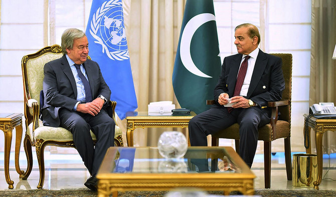
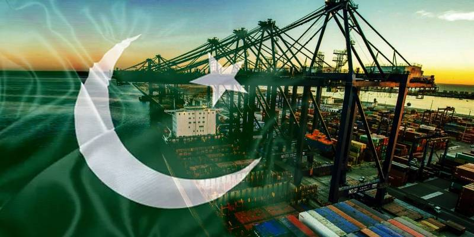
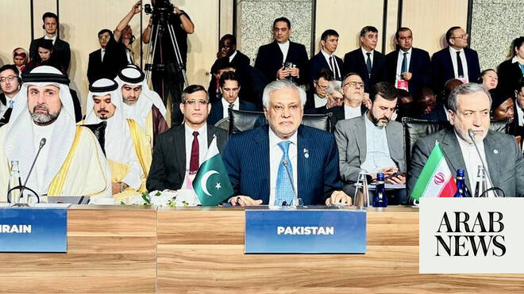
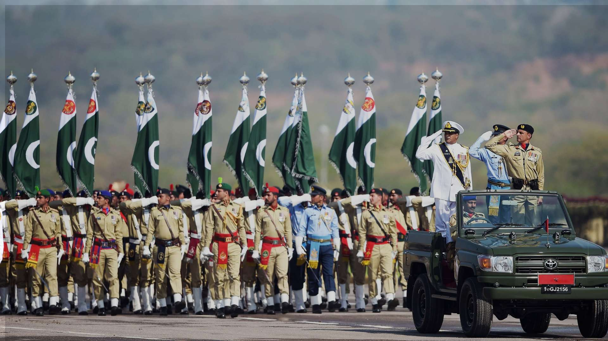
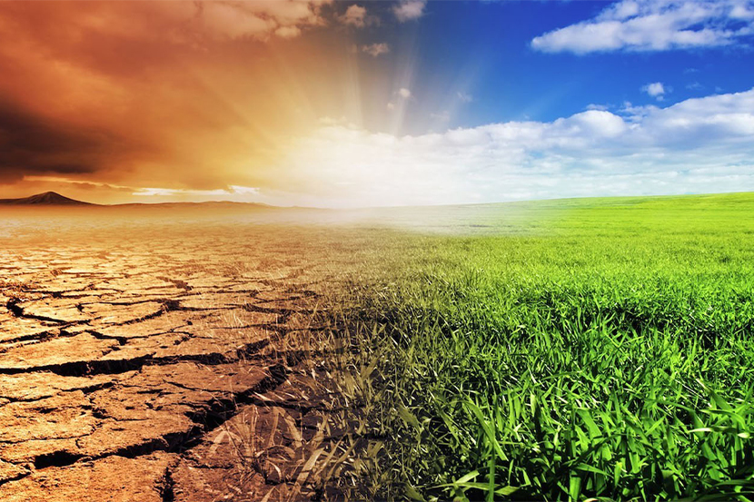
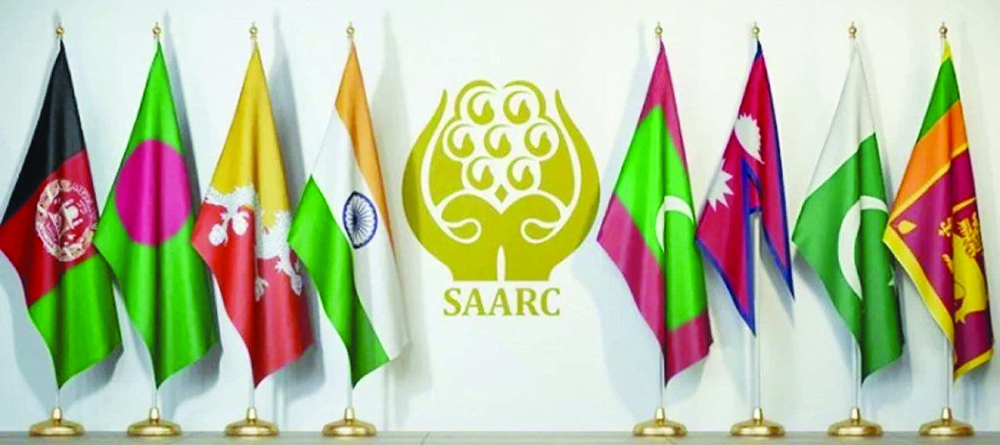

Pakistan’s foreign policy focuses on protecting national interests, promoting peace, strengthening international partnerships, supporting the Muslim world, enhancing trade, and maintaining strategic relations with global powers.

Pakistan and China have very strong and friendly relations based on trade, defense, and economic cooperation. China supports Pakistan through major projects like the China-Pakistan Economic Corridor (CPEC), which helps improve infrastructure, energy, and transportation in Pakistan.

Pakistan and the United States have cooperated in areas such as defense, counter-terrorism, trade, and education. Their relationship has experienced both cooperation and disagreements, but both countries continue diplomatic and economic relations.

Pakistan has close relations with Middle Eastern countries, especially Saudi Arabia, United Arab Emirates, and Qatar. These relations are based on religion, trade, employment opportunities for Pakistani workers, and economic cooperation.

The foreign policies of Pakistan and India focus on protecting national interests, security, economic growth, and international relations. Pakistan’s foreign policy emphasizes strong relations with Muslim countries, strategic partnership with China, regional peace, and support for the Kashmir issue, while India’s foreign policy focuses on economic development, global influence, regional leadership, and maintaining strategic independence. Both countries are active members of international organizations such as the United Nations and South Asian Association for Regional Cooperation, but their relations remain challenging due to issues like Kashmir, border disputes, and security concerns.

Pakistan is an active member of the United Nations and participates in peacekeeping missions, international discussions, and humanitarian activities. Pakistan also raises important issues like Kashmir at the UN platform.

Pakistan uses trade diplomacy to improve economic relations with other countries through exports, imports, and investment opportunities. Pakistan promotes trade partnerships with countries such as China, Turkey, and Gulf countries to strengthen its economy and increase international business cooperation.

Pakistan is an important member of the Organization of Islamic Cooperation (OIC), which works for unity and cooperation among Muslim countries. Pakistan supports Muslim causes and participates actively in meetings related to political, economic, and social issues in the Islamic world.

Pakistan’s defensive policy focuses on protecting national sovereignty, territorial integrity, and national security. Pakistan maintains strong armed forces and follows a policy of defense preparedness to deal with internal and external security challenges while also supporting regional peace.

Pakistan participates in global climate discussions and supports international efforts against climate change. Since Pakistan is vulnerable to floods, heatwaves, and environmental problems, it cooperates with organizations like the United Nations to promote climate action, sustainable development, and environmental protection.

Pakistan is a member of the South Asian Association for Regional Cooperation (SAARC), a regional organization that promotes cooperation among South Asian countries in trade, education, culture, and development. Pakistan supports regional peace and stronger economic relations through SAARC initiatives.